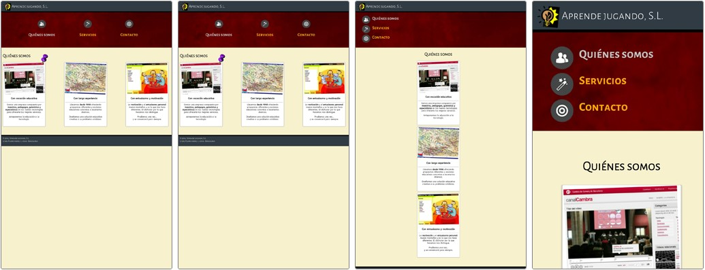

Los llamados media queries son una serie de funciones que incorpora CSS3 para que las páginas web se adapten "racionalmente" o adopten una maquetación diferente según la resolución en la que se muestre la página web, ya sea en navegadores que funcionan sobre ordenadores con grandes monitores, sobre tablets, móviles o incluso displays de neveras, yogurteras, coches o lavadoras conectadas a Internet. En la actualidad existe una muy amplia variedad de resoluciones de pantalla, pertenecientes a tablets, móviles y otros dispositivos. Por ello es conveniente adoptar una serie de estándares que abarquen las resoluciones más habituales: Hace algunos años era mucho más fácil controlar las resoluciones para los diferentes medios, -por ejemplo- la resolución habitual para un móvil era de 320 píxeles en modo horizontal y 480 en modo vertical. Actualmente existen móviles que tienen resoluciones equiparables a tablets y a pequeños portátiles. Por ello, para intentar agrupar resoluciones en grupos estándares, podemos utilizar los siguientes grupos: Resoluciones iguales o menores de 480 píxeles: para móviles Resoluciones de 481px a 768 píxeles: para tablets Resoluciones mayores de 768 píxeles: para ordenadores
